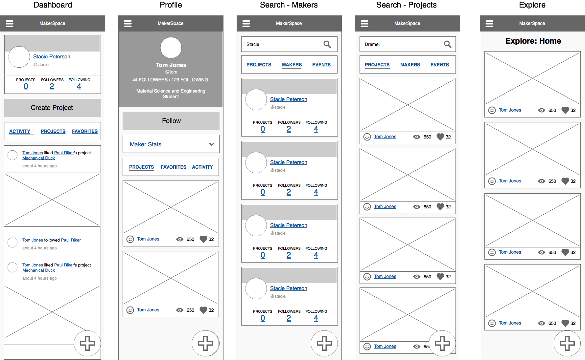
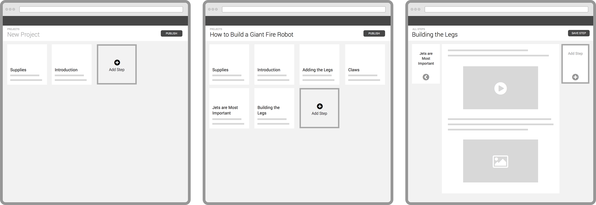
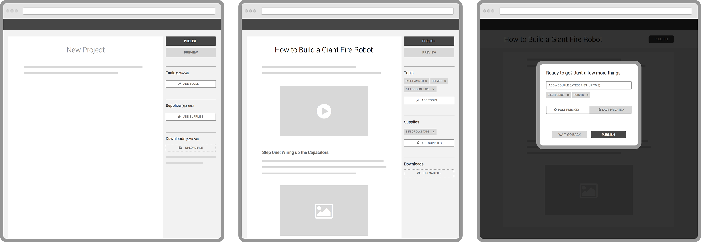

Learn, Share, Connect
MakerSpace was a social network created by Maker Media, the company behind Make: Magazine and Maker Faire, to bring the Maker Movement online. The core team was primarily remote, and acted with autonomy as a small startup within the larger corporation.
My Role
I was lead Product, UX and Visual Designer throughout the life cycle of the product, collaborating with a variety of stakeholders on everything from the art direction of promotional materials to interfacing directly with the CEO in a weekly strategy meeting.
Using Agile methodology, I worked closely with the developers, producing artifacts that included wireframes, high-fidelity comps and CSS/HTML prototypes. We often collaborated via "pair design" sessions over video chat, iterating in real-time on the implementation of my designs. In the final stages of the product, I worked with our Product Manager on overall strategy, leading to our final and most successful pivot: Spaces.
Press
Deliverables
Product Strategy
Responsive Design
Low-fidelity wireframes
High-fidelity comps
Living style guide
Personas
User Journeys
CSS/HTML Implementation
Minimum Viable Product
When we started the project in August 2014, the team was given an ambitious goal: launch an MVP at World Maker Faire New York September 20. We had 45 days. The team rose to the challenge, iterating rapidly and building out the social platform from scratch. We onboarded our first 700 users on-site at the Faire. What follows are a few design artifacts from that first crazy month.
Responsive Design
As a part of the initial designs, we considered the mobile user experience of the product to be very important. To guide the responsive implementation, I provided low-fidelity wireframes and worked in the HTML architecture to lay the groundwork for the eventual implementation.

Evolving User Projects: Steps
One of the design directions we explored, breaking projects out into separate steps.

Evolving User Projects: A robust medium editor
Another project direction, this version moving away from explicitly defining content types as "projects" and "posts" and moving towards a single generalized content type.

Spaces
The Spaces concept allowed for predefined areas for user content, with the eventual "killer feature" being user-defined spaces. We initially rolled out this concept with a set of 12 predefined spaces, and user content creation exploded. Usability testing showed thatusers felt like they were connecting with others rather than simply broadcasting. I explored a few design directions for this feature, including a masonry layout, a reddit-esque layout and incorporating spaces into a feed-like experience.